About Me

My name is Lindsey Woo and I am currently pursuing my master's degree in Mechanical Engineering with a concentration in Dynamics, Controls, and Robotics at Cornell University.
Looking to progress into the field of robotic controls, I am eager to learn more about control systems, sensing and navigation, and automation.
Outside of work, my hobbies range from hiking and biking to baking and playing piano.
Projects
SLAM with Jackal UGV
I am currently researching under Professor Mark Campbell at his Autonomous Systems Lab at Cornell University. The goal of my research is to implement various SLAM methods onto Clearpath Robotics' Jackal UGV and perform trajectory-based comparison for accuracy analysis. I am working with RTAB-Map, GMapping, and Cartographer with the ZED2 stereocamera and Velodyne LIDAR3. To calculate Absolute Trajectory Error and Relative Pose Error metrics, the ground truth is given by high precision GPS coordinates. The video shown above is the Jackal robot driving around the lab space and creating a 2D occupancy grid map. The visualization is done with Rviz.
---
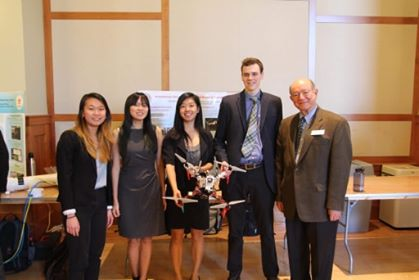
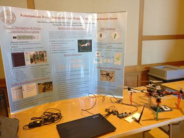
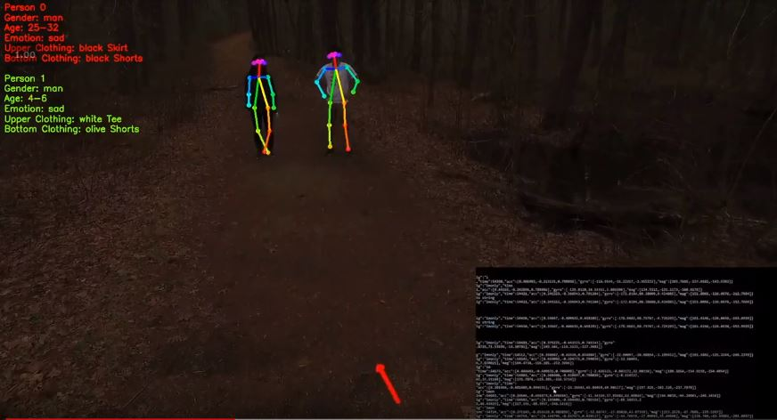
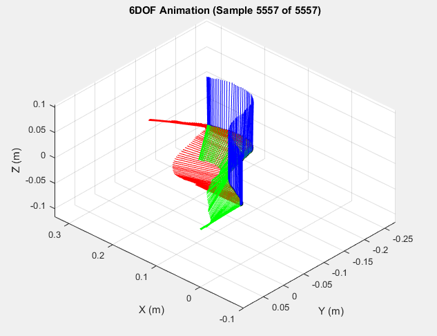
Autonomous Visual Navigation and Mapping Search and Rescue Drone
Our senior capstone design group built a drone system that can autonomously navigate a forest trail and identify a person of interest in an environment with limited GPS signal and display a map of the path taken by the drone. We utilized NVIDIA's TrailNet DNN to estimate the next pose for the drone to navigate towards and OpenPose DNN for person detection and descriptions. Once the person is found, the logged IMU data is sent over LoRa, a long-range low-power communication protocol, to the base station, a computer with MATLAB. Using a dead-reckoning algorithm, we are able to calculate the directions and distances the drone flew. Rotating the data points to a real-world frame gives us cartesian coordinates to overlay on an exisiting map of the forest, ready to be used by rescue personnel to reach the lost person.
This project taught us the importance of integration and systems engineering because we had a lot of difficulty getting our separate but functional parts working in tandem. We placed second runner-up in Northeastern University's Spring 2019 Capstone Design competition.
---
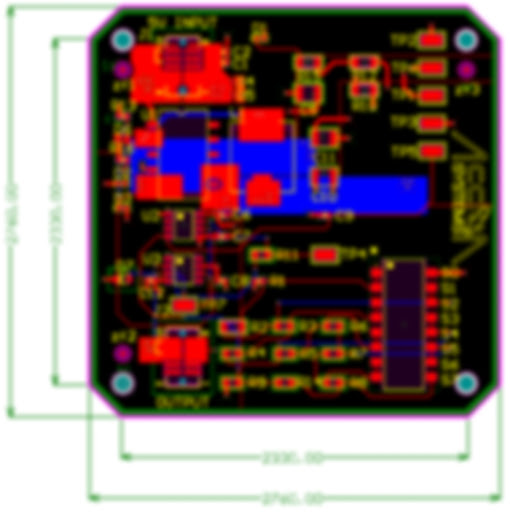
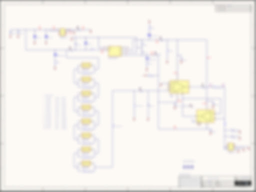
Constant Current Source PCB
From conceptualization to manufacturing, I designed a board to test the accuracy of the current sensors on the power processing unit. The PCB is attached to a power source and a load. The user can flip DIP switches to change the current to various levels, allowing them to see if the measured current passing through the load is within allowable range of the expected current for that level. Being able to experience the full design cycle from start to finish, I was able to learn common practices and industry standards surrounding design requirements, trade studies, part selection, board protection, and signal integrity.
---

Capacitive Touch Board
Looking for a cheaper alternative to a waterproof touchscreen, a fellow coworker and I developed a capacitive touch board, which had all the benefits of a touchscreen and could be made waterproof with a simple plastic housing. I developed the firmware to control all inputs and outputs for the board using the MSP430 and Cypress’ CY8CMBR3116 capacitive touch IC. The board had various peripherals, including NeoPixels and a piezoelectric driver for visual and haptic feedback, and these components were connected through I2C stemming from the MSP430. I learned a lot about serial communication, interrupt service routines, and the strict timing discipline needed to make the components and visual animations work together in harmony. Much time went into troubleshooting both the hardware and software, where I learned about the consequences of parasitic capacitances and memory limitations.
---
Robotic Arm
In this lab, I learned about PWM, wireless networking, and embedded systems to create a program where a WiiMote controls the movements of a robotic arm. Using the Xilinx development board to support the software and motor control of the robotic arm, I coded in C to instantiate the Bluetooth protocol to receive signals from the WiiMote and parse the acceleration data. I then modeled a system in MATLAB’s Simulink to produce pulse width modulations. From there, I continued to develop in C a program that would direct the PWMs to actuate the arm’s respective servos.
---
MFJ Cub Transciever
This project tied together concepts I learned about radio receiver architectures, from L-C RF and IF filters to mixers and up/down frequency conversion. Starting with soldering components to the board, crystals, capacitors, and inductors were chosen with values required to achieve resonance. An oscilloscope was used debug the board by ensuring the necessary voltage was coming through at specific nodes. It was also used to fine tune the filters to a frequency necessary to communicate with other groups’ radios via Morse Code.
---
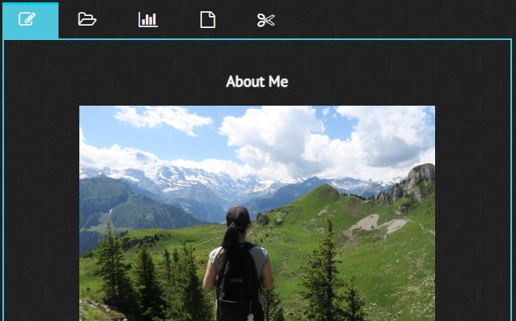
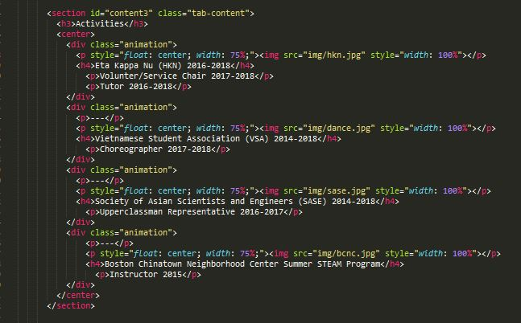
Personal Website
I coded in HTML and CSS to make a personal website that is responsive to various screen sizes.
---
Automated Mask Remover
For a mechatronics course, I designed my final project idea around the importance of masks.
---
Triple Pendulum
For a dynamics course, my final project was to calculate the equations of motions for the dynamics of a triple pendulum with various methods. Using Lagrange Equations, Newton-Euler, and Differential Algebraic Equations, I was able to animate the motion of a triple pendulum using MATLAB.
Activities
Eta Kappa Nu (HKN) 2016-2018
Volunter/Service Chair 2017-2018
Tutor 2016-2018
---
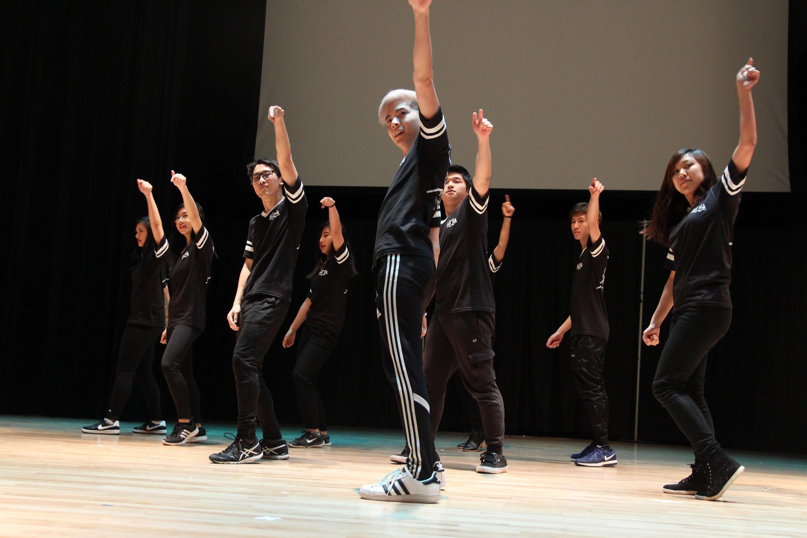
Vietnamese Student Association (VSA) 2014-2018
Choreographer 2017-2018
---
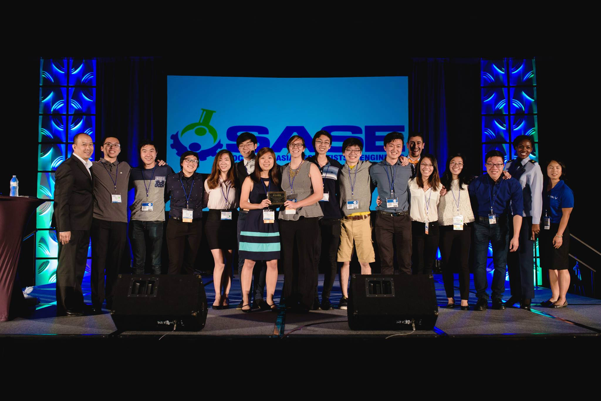
Society of Asian Scientists and Engineers (SASE) 2014-2018
Upperclassman Representative 2016-2017
---

Boston Chinatown Neighborhood Center Summer STEAM Program
Instructor 2015
Resume
Crochet
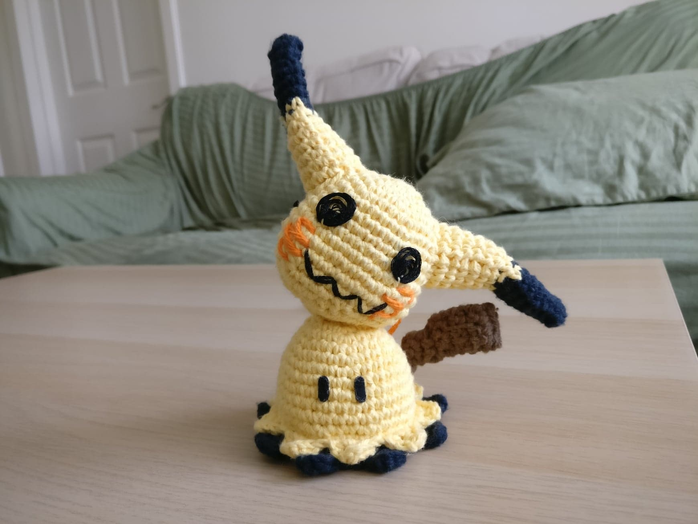Mimikyu
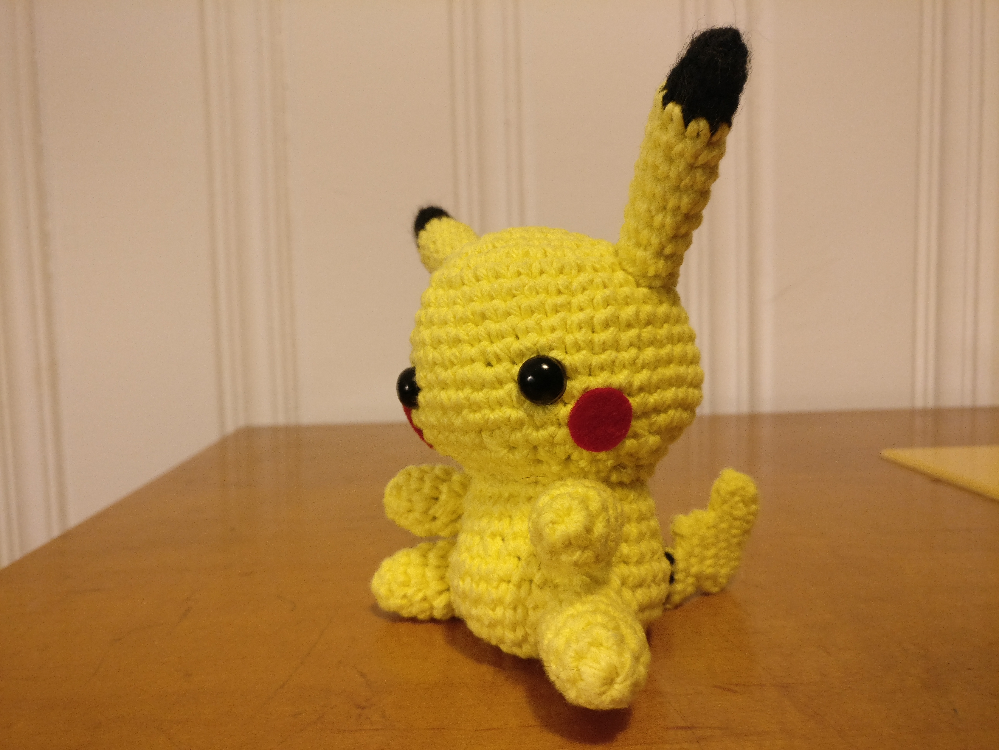Pikachu
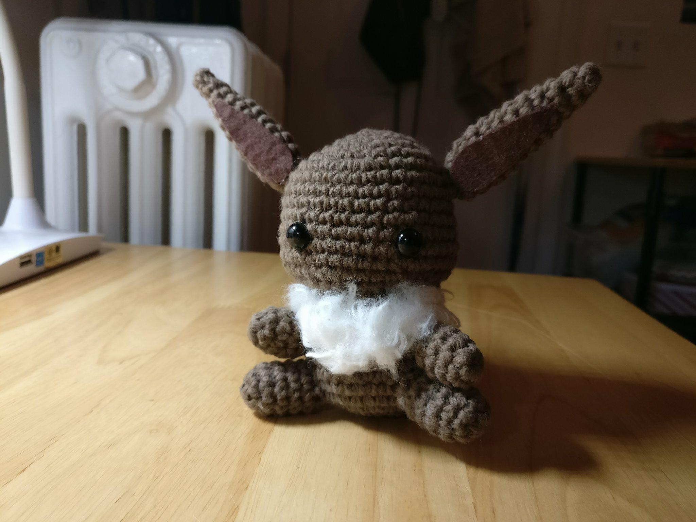Eevee
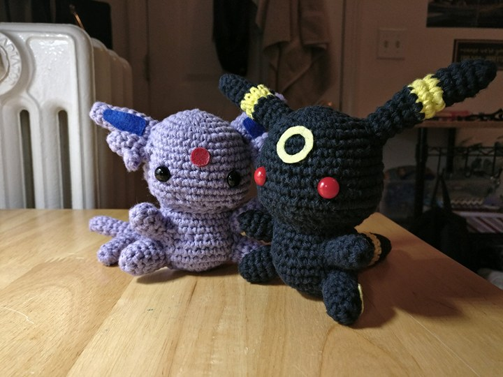Espeon and Umbreon
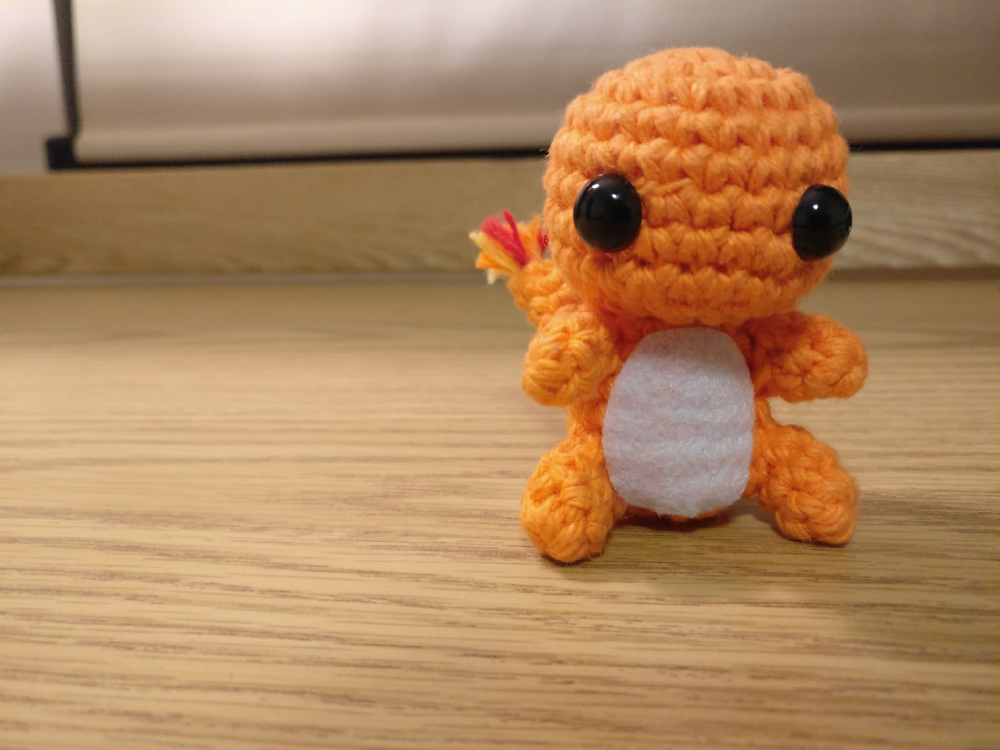Charmander
 Squirtle
Squirtle
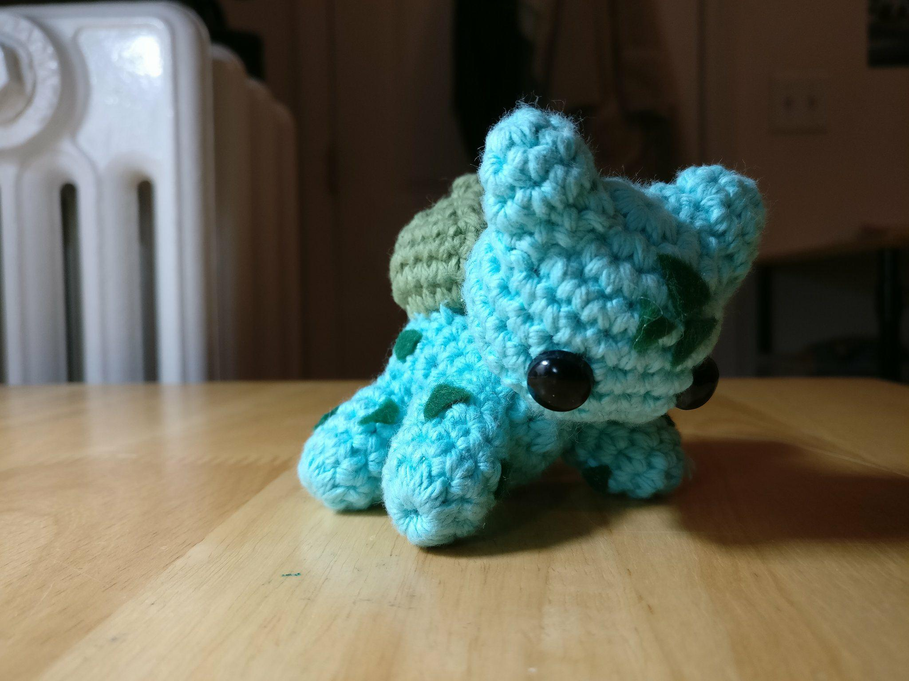Bulbasaur
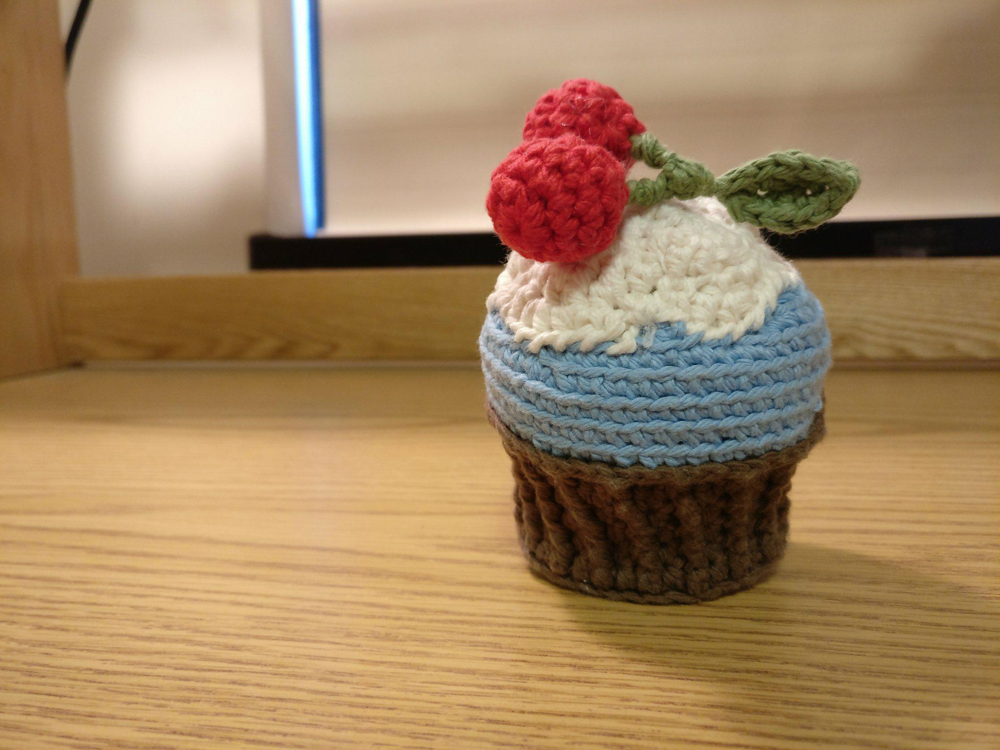Cupcake
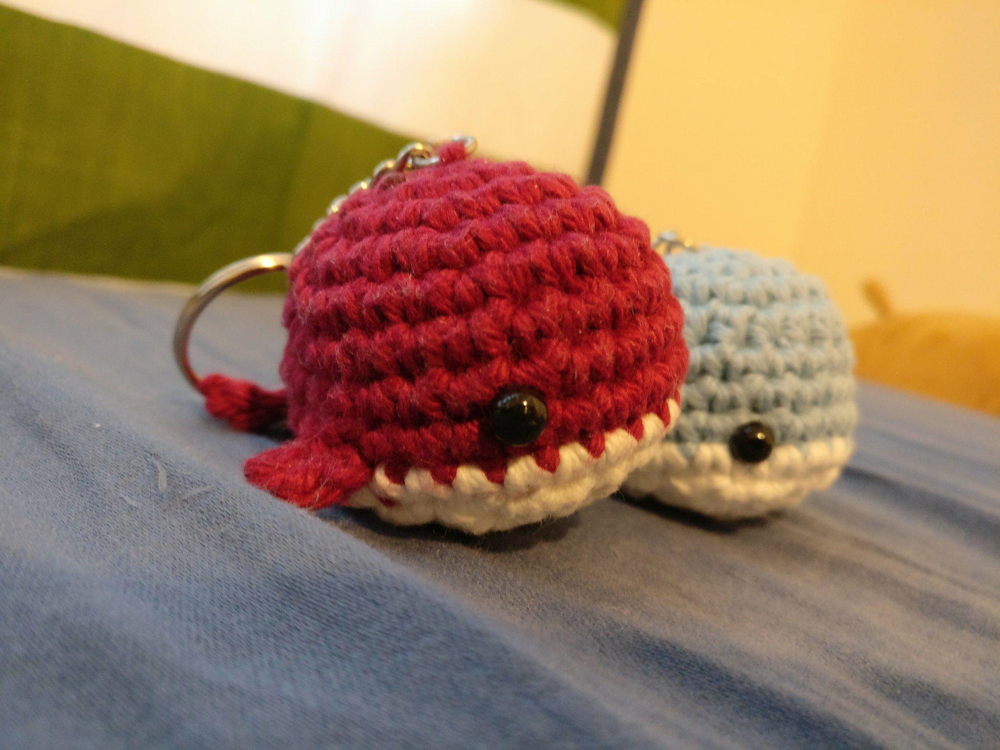Whales
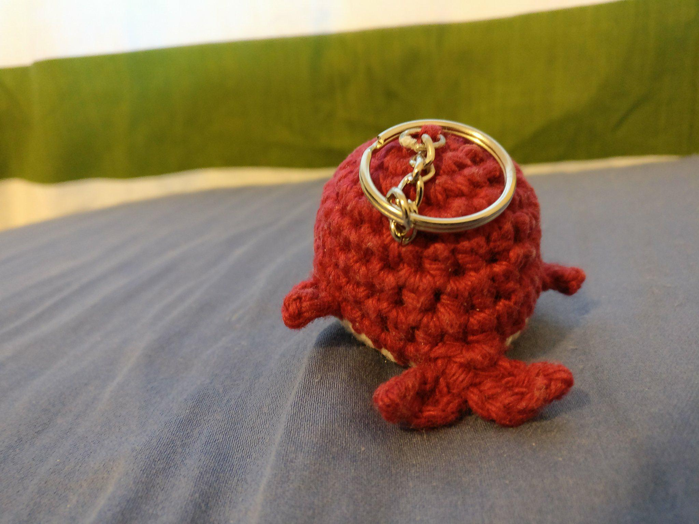More Whale
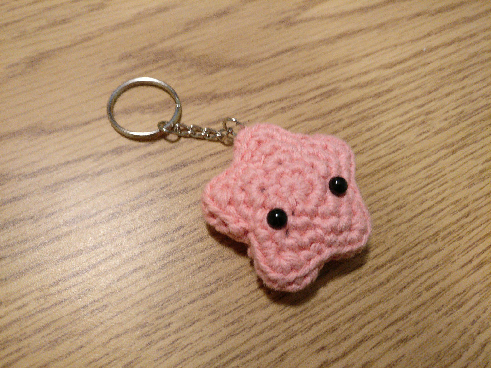Star
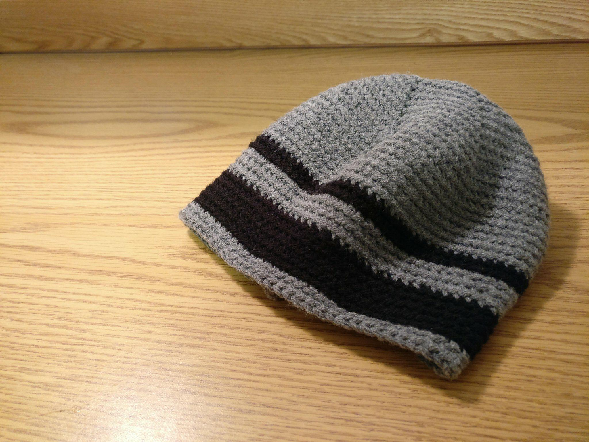Beanie